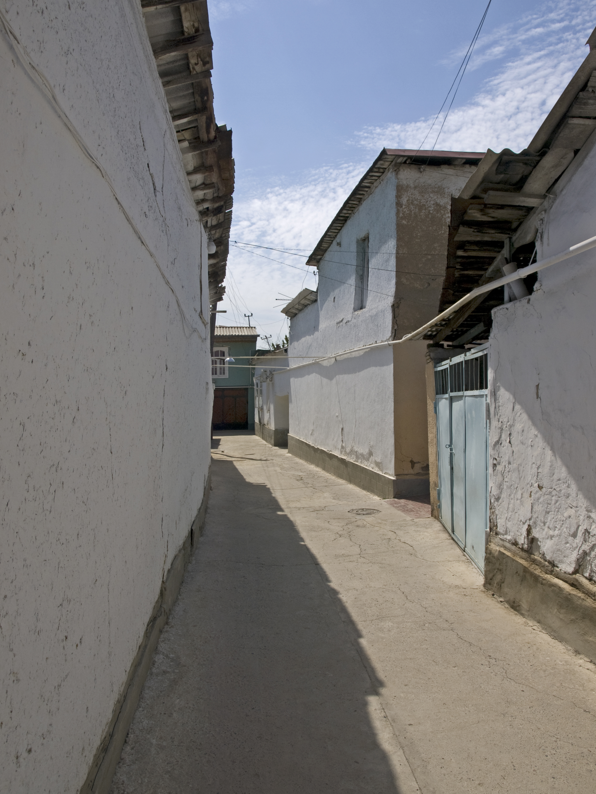

The exodus of the 1990s: the emigration of Russians, Jews and Germans from Uzbekistan (1989–2000)
On the eve of independence and in its first years, Uzbekistan's European minorities — Russians, Jews and Germans — left the country en masse. This history reference explains the 1989 census figures, the reasons and destinations of the emigration (Russia, Israel, the US, Germany) and its demographic consequences, on the basis of sources.

At the end of the Soviet period Uzbekistan's population was multi-ethnic: alongside Uzbeks there were large Russian (and other Slavic), Jewish and German communities. According to the 1989 Soviet census, the Uzbek SSR recorded 1,653,475 ethnic Russians (about 8.3% of the population), 94,900 Jews and 39,809 Germans. These are census figures, not estimates. (Source: Peyrouse, Kennan Institute; Wikipedia — "Russians in Uzbekistan," "History of the Jews in Uzbekistan"; Minority Rights Group.)
How these communities formed
Russians and Slavs had mostly arrived under the Russian Empire and in the Soviet period — through industrialisation, administration, and wartime evacuation. The Jewish community had two parts: the indigenous Bukharan Jews (Persian-speaking, having lived in Central Asia for centuries) and the Ashkenazi (European) Jews, many of whom arrived as evacuees during the Second World War. The Germans were largely descendants of Soviet Germans deported to Central Asia from the Volga region and elsewhere by Stalin in 1941–1942. (Source: Wikipedia — "Deportation of Soviet Germans (1941–1942)"; Minority Rights Group.)
The reasons for the emigration
In June 1989 violence against Meskhetian Turks in the Fergana Valley triggered the first panic departures among minorities. On 21 October 1989 Uzbekistan's Supreme Soviet adopted the law "On the State Language," making Uzbek the sole state language — which deepened the uncertainty felt by Russian-speakers. The collapse of the USSR (1991), economic crisis, the loss of state-sector jobs and general uncertainty accelerated the departures. There were also pull factors: Israel's Law of Return (for Jews), Germany's laws on the return of ethnic Germans, and Russia (for Slavs). (Source: Peyrouse, Kennan Institute; Minority Rights Group.) The Fergana events are covered in detail in [[fargona-1989-mesxeti-turklar]].

Jewish emigration: Israel and the US
The mass departure began in 1989. By some studies, about 90% of Uzbekistan's Jewish population left the country between 1989 and 2021; the main destinations were aliyah to Israel and the United States. The Bukharan Jewish community in particular emigrated on a large scale. By estimates, some 160,000 Bukharan Jews live in Israel today and about 50,000 in New York State — mainly in the Rego Park and Forest Hills neighbourhoods of Queens; 108th Street has been nicknamed "Bukharian Broadway." In Uzbekistan the number of Jews had fallen to a few thousand by 2021. (Source: Wikipedia — "History of the Jews in Uzbekistan," "Bukharan Jews.") Most of these figures are estimates.
The Germans' return to Germany
Under Germany's return laws, ethnic Germans across the former USSR — including Uzbekistan's roughly 40,000 — left for Germany as "Aussiedler" (returning settlers) over the course of the 1990s. The German community in Uzbekistan was almost entirely emptied out; this was part of a wider flow of more than two million Aussiedler from the former USSR to Germany (Uzbekistan's share being on the order of tens of thousands). (Source: Wikipedia — "Deportation of Soviet Germans"; Minority Rights Group.)
The Russian and Slavic outflow to Russia
More than 500,000 Russians left Uzbekistan between 1990 and 1997; some 170,000 are estimated to have left in 1992–1993 alone and about 200,000 in 1993–1994. As a result the Russian share of the population fell from 8.3% in 1989 to about 6.7% by 1995 and to roughly 3% by the early 2000s. (Source: Peyrouse, Kennan Institute; Minority Rights Group.) The 1989 share is from the census; the mid-decade figures are study estimates.
The demographic consequence
As a result Uzbekistan became a far more mono-ethnic state. Between 1989 and 1996 about 500,000 more people emigrated than immigrated, and almost all of those who left were non-Uzbek; at the same time ethnic Uzbeks began to return from other parts of the former USSR. The ethnic-Uzbek share rose from about 71% in 1989 to about 80% by the mid-1990s, and continued to climb thereafter. (Source: GlobalSecurity.org — "Uzbekistan – People.") The mid-decade percentages should be treated as estimates.
Conclusion
The exodus of 1989–2000 was one of the largest demographic turning points in Uzbekistan's modern history. The mass departure of the Russian, Jewish and German communities fundamentally changed the country's ethnic make-up, while at the same time giving rise to new diasporas tied to Uzbekistan all over the world — from Israel to Queens in New York, from Russia to Germany.

Sources
- Sebastien Peyrouse — The Russian Minority in Central Asia (Kennan Institute Occasional Paper #297)
- Wikipedia — Russians in Uzbekistan
- Wikipedia — History of the Jews in Uzbekistan
- Wikipedia — Bukharan Jews
- Minority Rights Group — Russians and Ukrainians in Uzbekistan
- GlobalSecurity.org — Uzbekistan: People